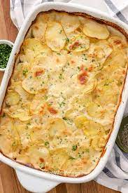

Betty Crocker's Scalloped Potatoes

The perfect side dish to a main course or a welcome addition to any potluck supper, Scalloped Potatoes is one of those dishes that seems complicated but is deceptively simple. You’ll need to put in a bit of “peeler time” to get the spuds ready for the oven, but after that, it’s just a long bake and a short standing period to let the sauce thicken. Then, voilà! Your baked Scalloped Potatoes dish is ready to serve. Set it out for an elegant or celebratory dinner, or bring it along to a get-together, and you'll be fielding requests for easy Scalloped Potatoes all year long.
Ingredients
- 4 tablespoons butter
- 1 small onion, finely chopped (1/3 cup)
- 3 tablespoons all-purpose flour
- 1 teaspoon salt
- 1/4 teaspoon pepper
- 2 1/2 cups milk
- 6 medium peeled or unpeeled potaotes, thinly sliced (6 cups)
Directions
- Heat oven to 350°F. Grease 2-quart casserole with shortening or cooking spray.
- In 2-quart saucepan, melt 3 tablespoons of the butter over medium heat. Cook onion in butter about 2 minutes, stirring occasionally, until tender. Stir in flour, salt and pepper. Cook, stirring constantly, until smooth and bubbly; remove from heat. Stir in milk. Heat to boiling, stirring constantly. Boil and stir 1 minute.
- Spread potatoes in casserole. Pour sauce over potatoes. Cut remaining 1 tablespoon butter into small pieces; sprinkle over potatoes.
- Cover; bake 30 minutes. Uncover; bake 1 hour to 1 hour 10 minutes longer or until potatoes are tender. Let stand 5 to 10 minutes before serving (sauce thickens as it stands).